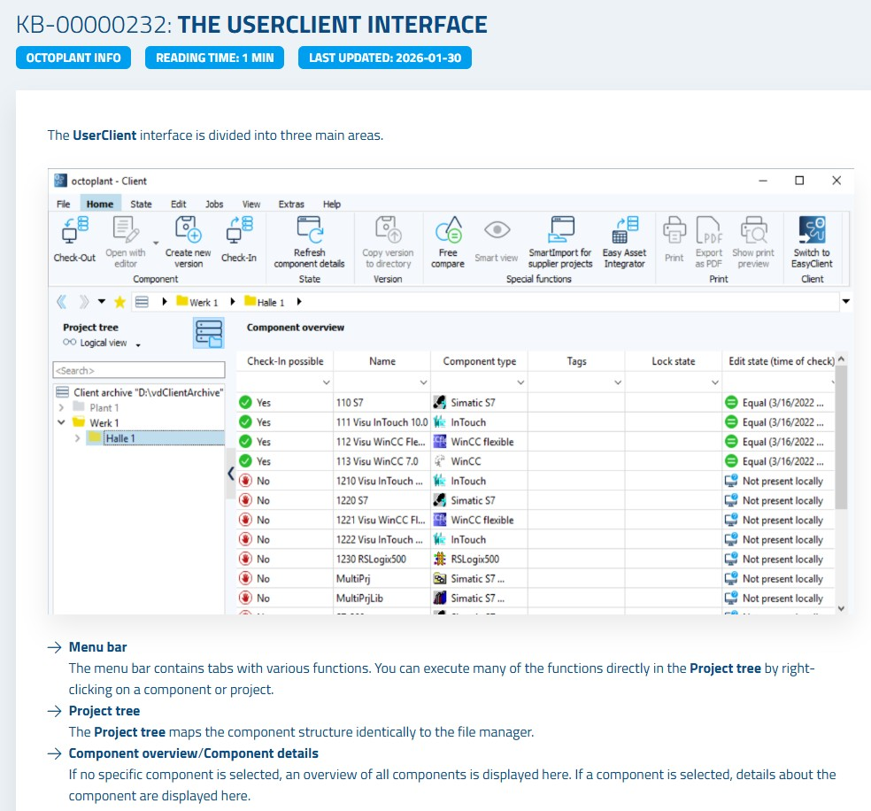
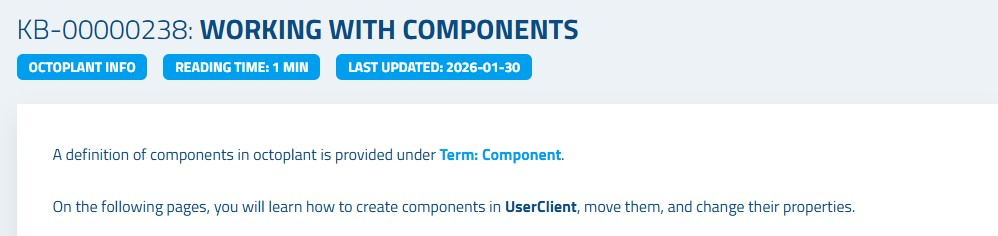
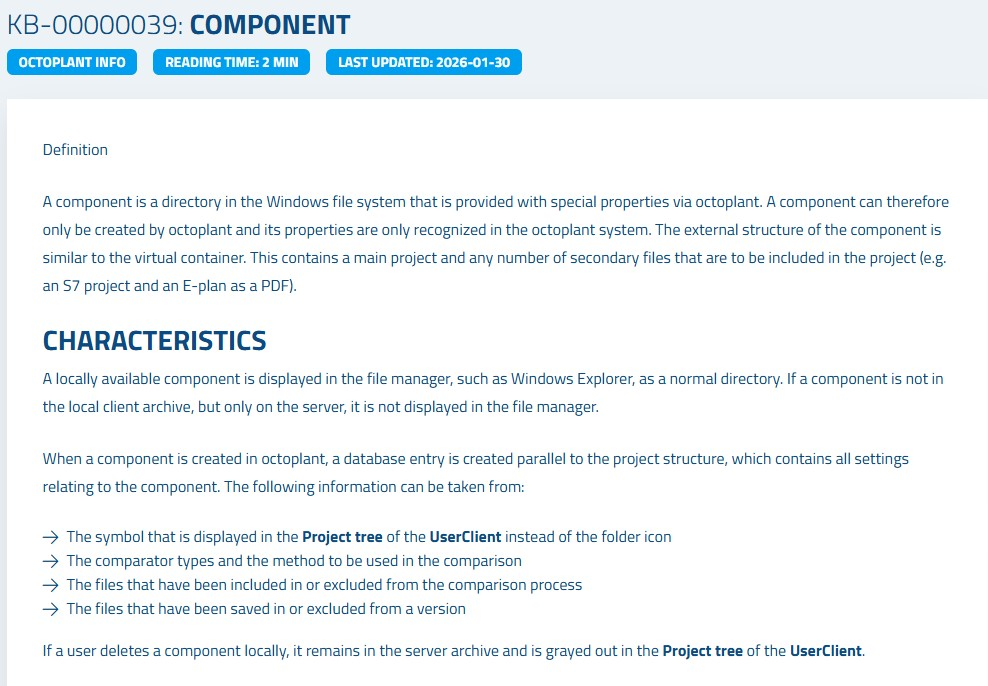
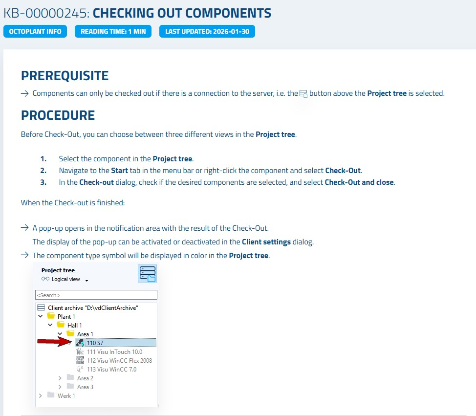

Manual Creation of Assets
In Octoplant, an asset (also called a component) is the fundamental unit of project data. This chapter walks you through the complete process of manually creating assets from scratch — building the project tree structure, creating components, populating them with data, and securely uploading them to the server.
What You Will Learn
Before adding assets to Octoplant, you need to understand what a component is. A component is a directory in the Windows file system that Octoplant has assigned special properties to. It acts as a container for your project data — for example, a PLC program, an HMI project, or any other automation file.
The manual asset creation process follows five sequential steps that take a project from your local PC to the secure Octoplant server archive, where it becomes available to all authorized users.
Create Structure
Add directories in the Project tree
Create Component
Right-click → New component
Copy Data
Paste project files into component
Base Version
Create the initial version
Check-In
Upload to server archive
Step 1: Create the Project Structure
The first step is to build a logical folder structure in the Octoplant Project tree. This structure mirrors how your automation project is organized — for example, by plant area, machine type, or production line. A well-planned structure makes it easy for all users to find and manage assets.
Line_01, Conveyor_Belt, or PLC_Programs) and click OK.
Step 2: Create a New Component
Once the directory structure is in place, you can create the actual components (assets) within the appropriate directories. Each component corresponds to one automation project or device program.
PLC_Conveyor_01).• Simatic S7 for STEP 7 / TIA Portal projects
• WinCC for WinCC HMI projects
• TwinCAT for Beckhoff TwinCAT projects
• General for any other file type


Step 3: Copy Project Data into the Component
After creating the component, you need to populate it with the actual project files from your local PC. Octoplant components are stored as directories on your file system, so you can use Windows Explorer to copy files directly into them.
C:\Octoplant\WorkDir\[ComponentName]).Step 4: Create a Base Version
Before a component can be uploaded to the server, you must create its base version. The base version is the initial snapshot of the component — it serves as the starting point for all future version comparisons and change tracking.
Step 5: Check-In to the Server
The final step is to upload the component and its base version to the Octoplant server archive. Once checked in, the component is securely stored on the server and becomes accessible to all authorized users — even if the local copy is later deleted.

Summary
| Step | Action | Where | Result |
|---|---|---|---|
| 1 | Create directory structure | Project tree → Right-click → New directory | Logical folder hierarchy created |
| 2 | Create component | Project tree → Right-click → New component | Empty component container created |
| 3 | Copy project data | Windows Explorer → Paste into component folder | Project files inside component |
| 4 | Create base version | Home tab → Create base version | Initial version snapshot recorded |
| 5 | Check-In to server | Home tab → Check-In | Component securely stored on server |